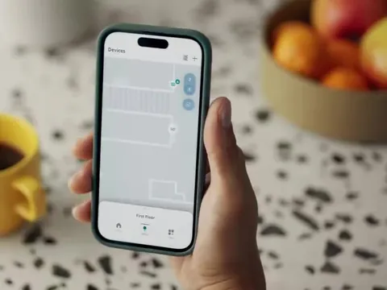

Credits
M-PESA Africa

Amazon Bio Discovery


Stanford AI Index 2025


Alexa Map View




Amazon Health AI

Halo Movement


Halo Tone


Halo Body


Amazon Halo


Alexa Shopping


Prime Now


Amazon Bedding & Bath


Target